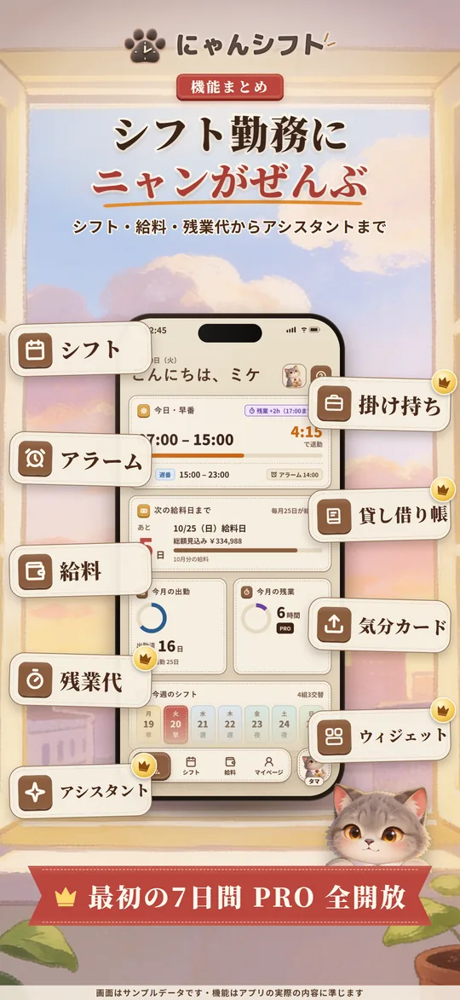
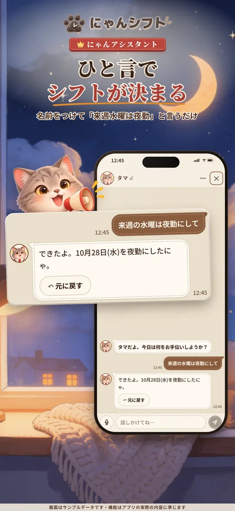
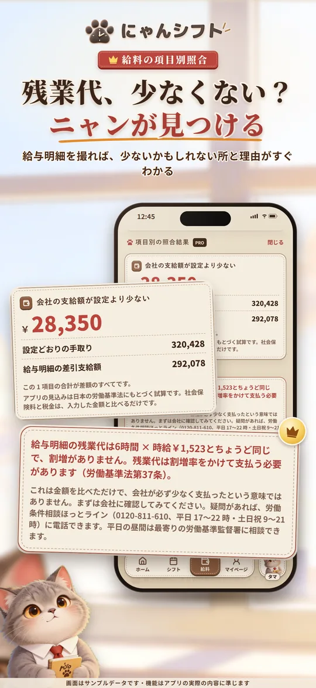
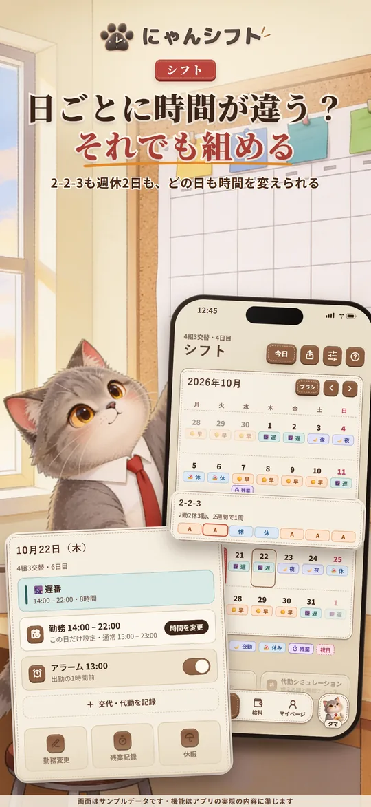
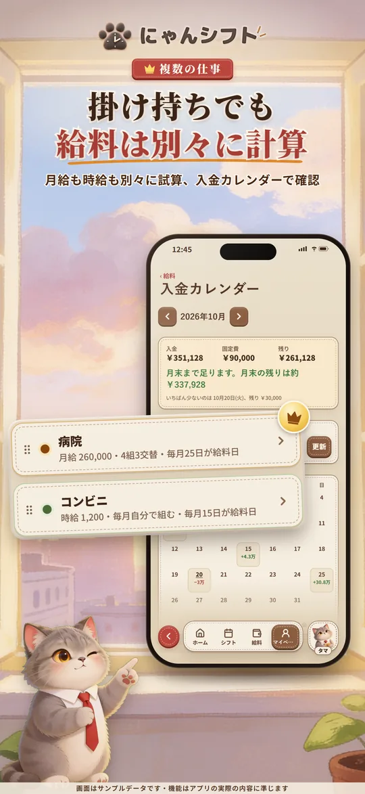
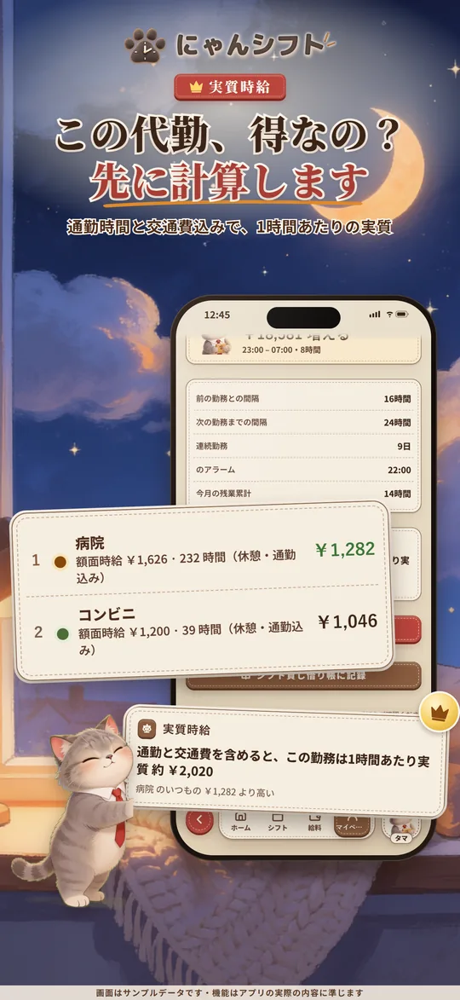
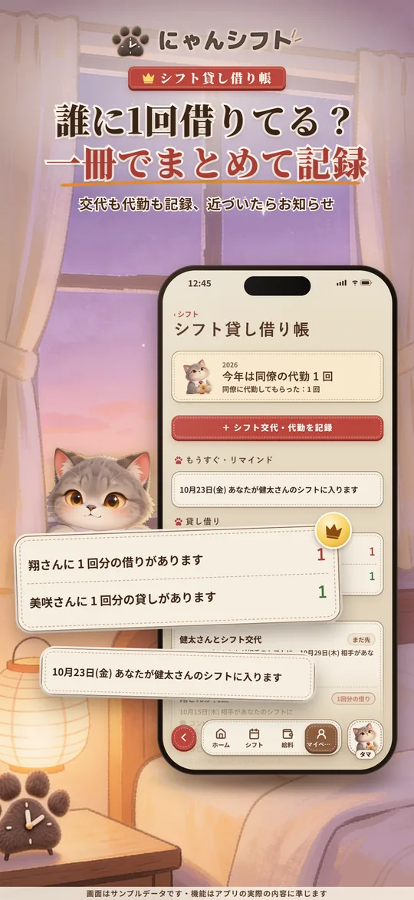
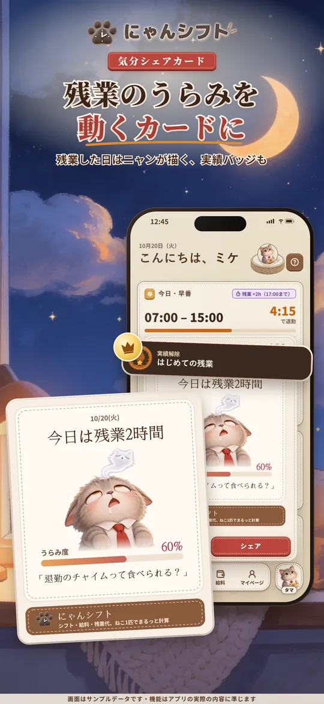
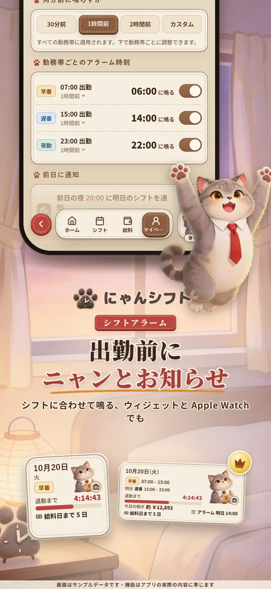
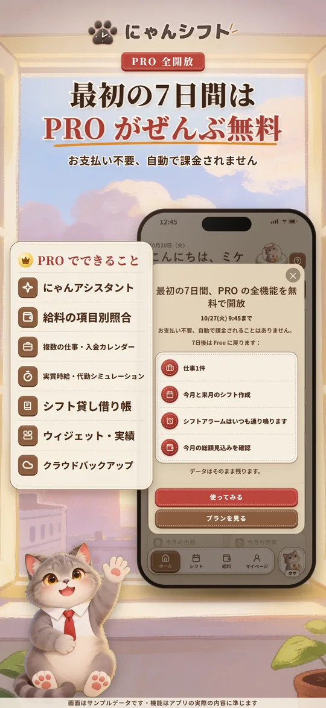

🎁 ダウンロード後、最初の7日間は PRO 全機能開放



にゃんシフトは、看護師・介護・工場・警備・飲食・販売・アルバイトなど、シフト勤務で働く人のためのアプリです。シフトを入れるだけで、いつ出勤か、何時に終わるか、今月だいたいいくらもらえるかがわかります。











🎁 ダウンロード後、最初の7日間は PRO 全機能開放：PRO のすべての機能を7日間無料で使えます。支払いは不要で、自動で課金されることもありません。7日後も基本機能は無料で使い続けられ、にゃんシフト PRO のサブスクリプションに登録することもできます。

価格は地域によって異なり、App Store・Google Play に表示される金額が正式な価格です。サブスクリプションは自動更新で、ストアでいつでも解約できます。
試算結果は目安です。実際の給与は会社の給与明細をご確認ください。